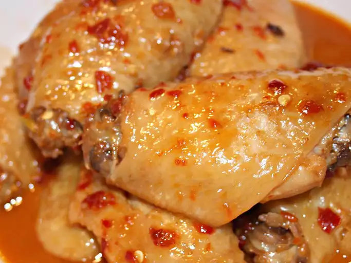

Spicy Chinese Chicken Wings

Description
These wings are spicy and sweet with a hint of garlic and honey. They are very easy to make and are baked in the oven.
Ingredients
- 3 pounds chicken wings
- 1 tablespoon olive oil
- 1 teaspoon soy sauce
- 1 teaspoon garlic powder
- 1 teaspoon ground ginger
- 1 teaspoon onion powder
- 1 teaspoon salt
- 1/2 teaspoon black pepper
- 1/2 cup honey
- 1/4 cup soy sauce
- 1/4 cup ketchup
- 1/4 cup hoisin sauce
- 2 cloves garlic, minced
- 1 tablespoon sriracha sauce
- 1 tablespoon cornstarch
- 1 tablespoon water
- sesame seeds and chopped green onions for garnish
Instructions
- Preheat oven to 400 degrees F (200 degrees C).
- Place chicken wings in a large resealable plastic bag. Add olive oil, 1 teaspoon soy sauce, garlic powder, ginger, onion powder, salt, and pepper. Seal bag and shake until wings are coated. Arrange wings on a baking sheet.
- Bake in the preheated oven until wings are cooked through and crispy, 45 to 50 minutes.
- Combine honey, 1/4 cup soy sauce, ketchup, hoisin sauce, garlic, and sriracha sauce in a saucepan over medium heat. Cook until flavors combine, about 5 minutes. Mix cornstarch and water in a small bowl; stir into the sauce. Bring to a boil; cook until thickened, about 2 minutes.
- Transfer wings to a large bowl. Pour sauce over wings; toss to coat. Garnish with sesame seeds and green onions.
Enjoy!
Home